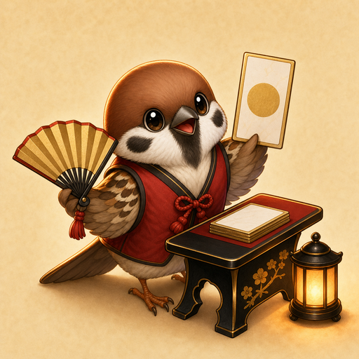

READER MOONCALL
First Moon Syllable 0/3
Match the moon card with the blue spring seal before the rival hand arrives.
Scan traitsLock moonSweep timing

The reader lifts the first cue. Scan the cards, mark a likely match, then sweep cleanly.